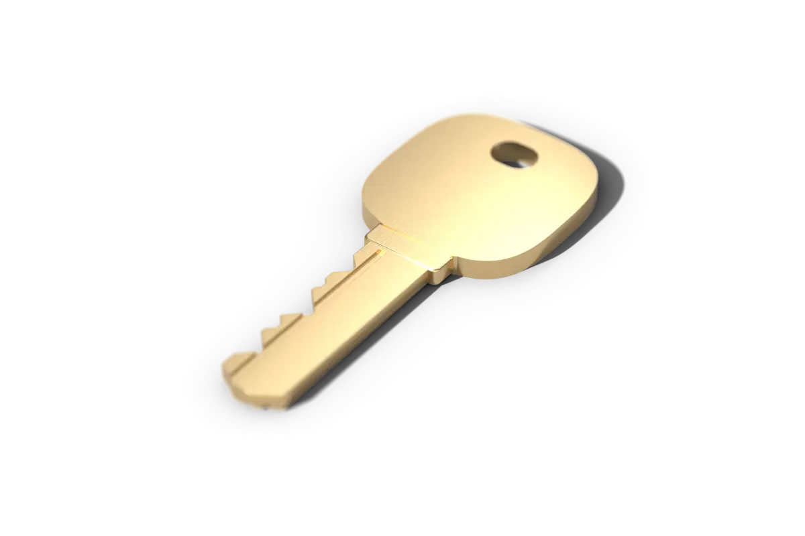
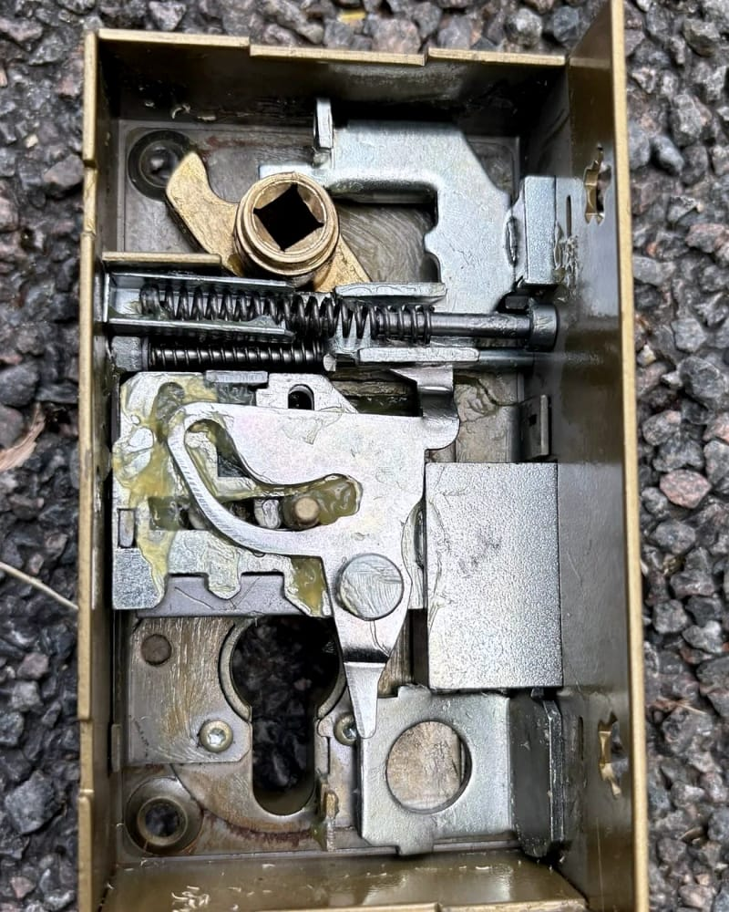

Porte claquée : on vient l’ouvrir
De jour comme de nuit, tous les jours.
On décroche jour et nuit, tous les jours. Prix de départ :
À partir de 75 € TTC
Il est et on décroche. Prix de départ : Il est et on décroche. Prix de départ :Avant que le serrurier parte, on vous dit par appel ou par SMS qui vient et le prix de départ.
Claquée ou fermée à clé, ce n’est pas le même travail
Si vous avez simplement tiré la porte derrière vous, elle est claquée : seul le pêne demi-tour la retient, cette languette en biseau qui rentre quand on pousse la porte et ressort dans la gâche. Si vous avez donné un tour de clé, ou quelqu’un d’autre, le pêne dormant est sorti aussi.
Sur une serrure trois points, ce tour de clé verrouille encore la porte en haut et en bas. Chaque point fermé ajoute du travail, et c’est le devis qui le chiffre, devant la porte.

Ce que fait le serrurier, dans l’ordre
À partir de 75 € TTC
C’est le prix de départ d’une porte claquée ouverte en journée, déplacement compris dans notre zone. Une porte fermée à clé demande souvent plus de travail : le prix exact est sur le devis, écrit et gratuit, avant que le serrurier commence.
Il regarde la porte, la serrure et le cylindre, et vous demande ce qui s’est passé : porte claquée en sortant, fermée à clé, clés perdues ou volées.
Il vous remet le devis écrit, avec le prix de l’ouverture et, s’il en faut, celui des pièces. Rien ne commence sans votre accord.
Il essaie d’abord d’ouvrir sans abîmer la serrure, quand elle le permet.
S’il faut percer le cylindre, le devis le dit, avec le prix du cylindre de remplacement, pour que votre porte ferme à clé quand il repart.
À la fin, une facture détaillée. Si une pièce a été changée, l’ancienne vous revient si vous la voulez.
En attendant le serrurier
Si un enfant ou une personne fragile est enfermé seul à l’intérieur, ou si une casserole est restée sur le feu, appelez d’abord le 18 ou le 112. Vous nous appellerez ensuite.
- Ne forcez pas la porte et ne glissez rien dans la serrure : une serrure abîmée coûte plus cher à ouvrir.
- Demandez à un voisin, au gardien ou à un proche s’il a un double de vos clés. Ça peut vous éviter de payer quoi que ce soit.
- Restez dans un endroit éclairé, près de la porte, avec un peu de batterie.
Entre 21 h et 6 h, on ouvre et on referme
- Prix de départ :
- À partir de 75 € TTC
La nuit, nos serruriers partenaires ouvrent la porte et la remettent en état de fermer. Changer une serrure qui fonctionne encore se propose le lendemain, au calme, sur devis.
Qui vient ouvrir
L’associé serrurier, ou l’un de nos serruriers partenaires, des indépendants qui travaillent dans les communes que nous desservons. Celui qui vient vous appelle avant d’arriver.
Qui intervient chez vousAvant d’appeler pour une porte claquée
- Si je refuse le devis, je dois payer quelque chose ?
- Non, ni le devis ni le déplacement. Le serrurier repart, et vous ne nous devez rien.
- Allez-vous percer ma serrure ?
- Seulement s’il n’y a pas d’autre moyen d’ouvrir, et jamais sans que ce soit écrit sur le devis que vous avez accepté, avec le prix du cylindre qui remplace celui qu’on perce.
- J’ai perdu mes clés : faut-il changer la serrure ?
- Pas forcément le soir même. Si vos clés peuvent être retrouvées avec votre adresse, parce qu’elles étaient avec vos papiers ou dans un sac volé, changer le cylindre devient prudent, et ça se prévoit au calme, sur devis. Si elles sont simplement tombées quelque part, le choix vous revient.
- Je suis locataire : je peux vous appeler moi-même ?
- Oui. C’est vous qui demandez l’ouverture, et la facture est à votre nom. Si la serrure doit être changée, prévenez votre propriétaire ou votre agence : selon la cause, la dépense revient à l’un ou à l’autre, comme le prévoient votre bail et le décret du 26 août 1987 sur les réparations locatives.
- C’est plus cher le dimanche ?
- Non. Le samedi, le dimanche et les jours fériés, le prix est le même qu’en semaine.
Porte claquée en ce moment
Au téléphone, dites votre commune et si la porte est claquée ou fermée à clé : le serrurier sait ce qui l’attend avant de partir.
Appeler